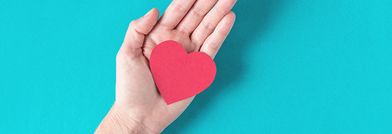

사회공헌
밝고 따뜻한 사회를 위한
동아ST의 사회적책임
구성원 • 고객 • 사회의 건강과 행복
'함께성장'의 사회공헌 철학을 바탕으로 기업으로서 사회적 책임을 다하고자 노력합니다. 또한 '건강' '환경' '사람' '사회' 사업영역에서 다양한 사회공헌 사업을 전개하고 있으며, 임직원의 자발적인 참여 문화 구축에도 앞장서고 있습니다.
CSR 핵심가치
- 지속성
- 진정성
- 업의 연관성
동아ST는 지속성, 진정성, 업의 연관성이라는 CSR 핵심가치를 중심으로 ‘함께 성장’의 사회공헌 철학을 실현하고 기업의 사회적 책임을 다하고자 노력하고 있습니다.

아름다운 동아ST의 사회공헌활동
'함께성장'의 사회공헌 철학을 바탕으로 기업으로서 사회적 책임을 다하고자 노력합니다. 또한 '건강' '환경' '사람' '사회' 사업영역에서 다양한 사회공헌 사업을 전개하고 있으며, 임직원의 자발적인 참여 문화 구축에도 앞장서고 있습니다.